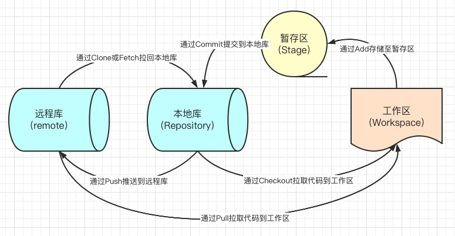

平安蜀黍的前端教程 > 第一单元 开发环境与工具封装 > GIT 版本管理工具的应用
什么是版本管理工具？
版本管理工具是一种通过一个版本号来记录一个或多个文件内容变化，便于将来查阅特定版本修订情况以及回溯的系统。简单来说，就是一个记录我们所有上传过的代码的记录工具，每一个记录中的代码都可以读取、修改或覆盖等。
有了它我们就可以将某个文件回溯到之前的状态，甚至将整个项目都回退到过去某个时间点的状态，可以比较文件的变化细节，查出最后是谁修改了哪个地方，从而找出导致怪异问题出现的原因，又是谁在何时报告了某个功能缺陷等等。
使用版本控制系统通常还意味着，就算你乱来一气把整个项目中的文件改的改删的删，你也照样可以轻松恢复到原先的样子。 但额外增加的工作量却微乎其微。
常见的版本管理工具
VSS Visual Source Safe， 微软提供的一个版本工具，没有用过，所以在这里
CVS Concurrent Versions System，与 SVN 是同一家公司出品的，早期用过这个，后来改用了 SVN
SVN CollabNet Subversion，咱们有部分学员可能接触过，就是大名鼎鼎的小乌龟。SVN 是在 CVS 的基础上，由 CollabNet 提供开发的，也是开源工具，应用比较广泛。他修正了 cvs 的一些局限性，适用范围同 cvs，目前有一些基于 SVN 的第三方工具，如 TortoiseSVN，是其客户端程序，使用的也相当广泛.在权限管理，分支合并等方面做的很出色，他可以与 Apache 集成在一起进行用户认证。
GIT 是一个开源的分布式版本控制系统，用以有效、高速的处理从很小到非常大的项目版本管理。Git 是 Linus Torvalds 为了帮助管理 Linux 内核开发而开发的一个开放源码的版本控制软件。Torvalds 开始着手开发 Git 是为了作为一种过渡方案来替代 BitKeeper，后者之前一直是 Linux 内核开发人员在全球使用的主要源代码工具。开放源码社区中的有些人觉得 BitKeeper 的许可证并不适合开放源码社区的工作，因此 Torvalds 决定着手研究许可证更为灵活的版本控制系统。尽管最初 Git 的开发是为了辅助 Linux 内核开发的过程，但是我们已经发现在很多其他自由软件项目中也使用了 Git。例如，最近就迁移到 Git 上来了，很多 Freedesktop 的项目也迁移到了 Git 上。
一、Git 的安装
windows 客户端：
你可以直接官网下载，下一步到底，不需要任何配置即可使用
mac 客户端：
brew install git
一般来说，我们使用 mac 的电脑时都会有一个 xcode，而 xcode 都是自带 git 的，所以你打算安装 git 之前，先在你的终端打印一下 git 的版本号试试是否已经有了 git?
最简单的方式是看你的系统中是否已经有 Xcode 这个应用，如果有 Xcode，你可以使用 git version 来查看当前 git 的版本号，如果有打印出版本号，表示你的系统中已正常安装 git
git version
如果没有 Xcode，那么我们可以下载安装程序来安装：
git 账号的申请与配置(以码云为例的申请)
这里需要注意的是，企业一般都会有自己的 gitlab(gitlab 是一个 git 库管理软件)，git 账号是不需要你自己申请的，一般进入公司后会给你一个公司的邮箱和密码，你的 leader 会给你的邮箱分配权限。如果在需要登陆 git 库的时候，出现没有账号或无法登陆或报权限错误，那么都可能是你的 leader 忘记给你申请权限，找他询问一下就行了。
二、注册你的电脑信息到线上仓库
不注册信息其实也是可行的，你可以在 clone 项目完成后，在 push 时输入你的账号和密码或配置 config 文件，在校验完成后进行代码提交，但这样是比较繁琐的，而且你每个项目都需要输入账号与密码。为了更加方便地使用 git 来管理我们的项目，在这里我建议你还是配置 ssh 公钥会更加方便一些：
1. 生成公钥
进入公司，拿到 git 账号的第一件事就是生成公钥，有了公钥你才有上传代码的权限。
ssh-keygen -t ed25519 -C '公司给你的邮箱地址或你在gitlab注册的邮箱地址用于标注这串密钥的用途'
# 注，如果你的系统不支持ed25529，可以使用rsa算法
ssh-keygen -t rsa -b 4096 -C '公司给你的邮箱地址或你在gitlab注册的邮箱地址用于标注这串密钥的用途'
在这里简单地解析一下 ssh-keygen 的各个参数的功能吧
| 指令 | 功能 |
|---|---|
| -t | 指定需要创建的密钥类型 可选 rsa/ed25519 |
| -b | 指定密钥长度 |
| -C | 添加注释 |
| -f | 指定用于保存密钥的文件名 |
| -e | 读取已有的私钥或公钥文件 |
注：能使用 ed25519 类型的密钥最好是使用 ed25519，它的加解密速度更快，安全性更高；rsa 类型的兼容性会更好一点但生成时间慢，且安全性低。
[root@linuxcool ~]# ssh-keygen -t ed25519 -C 'marion.lau@foxmail.com'
Generating public/private rsa key pair.
Enter file in which to save the key (/Users/marion/.ssh/id_ed25519):
# 直接回车，以默认路径保存
# 这里也可以选择输入新的地址，比如：/Users/marion/.ssh/gitee_id_25529
Created directory '/Users/marion/.ssh/id_ed25519'.
Enter passphrase (empty for no passphrase):
# 直接回车，不额外设置密钥密码
Enter same passphrase again:
# 直接回车，确认不额外设置密钥密码
Your identification has been saved in /Users/marion/.ssh/id_ed25519.
Your public key has been saved in /Users/marion/.ssh/id_ed25519.pub.
The key fingerprint is:
SHA256:tUB6SjLnvqM7p2l+bmHUZGNqUyyOPmXGyiMp3tC9xNA marion.lau@foxmail.com
The key's randomart image is:
+---[RSA 2048]----+
| .. |
| .oB |
| +++Oo.. |
| ..E@o.o . |
| .++Bo.S . |
|..o.*=o |
|..o..+o. |
| . .oo=. |
| o*Xo. |
+----[SHA256]-----+
# 看到上面这个图形就表示你的密钥创建成功了
2. 生成的公钥在哪里？
如果你是 windows 用户，可以找你的用户目录下，.ssh 文件夹，id_ed25519.pub 文件，大致的路径应该是
c:\\users\\你自己的用户名\\.ssh\\id_ed25519.pub
使用记事本打开文件后复制里面的内容；
如果你是 mac 用户，可以在终端输入下面的命令，复制打开的内容：
vi ~/.ssh/id_ed25519.pub
// 复制完成后输入:q后回车离开
// 关于vi的一些常用命令，可以百度查询
3. 保存公钥
鼠标移至 gitlab 或码云右上角头像位置，在下拉列表中选择设置，在新打开的页面中右侧菜单项里寻找 SSH 公钥，点击后将复制的公钥粘贴至公钥输入框中并点击确定
4. 测试连接
在你的终端输入下面的命令：
ssh -T git@gitee.com
# 如果正确连接，会返回下面的信息
# Hi marion! You've successfully authenticated, but GITEE.COM does not provide shell access.
多仓库信息管理
很多时候我们可能需要同时管理多个远程仓库，这时如果频繁地修改 ssh 密钥无疑是一件很痛苦的事情，所以，我们可以配置多个 git 仓库：以码云与 github 同时存在为例：
1. 创建两个或多个 ssh 密钥：
# mac系统
ssh-keygen -t ed25519 -C '你在码云的邮箱地址' -f ~/.ssh/gitee_id # 码云的
ssh-keygen -t ed25519 -C '你在github的邮箱地址' -f ~/.ssh/github_id # github 的
# windows系统
ssh-keygen -t ed25519 -C '你在码云的邮箱地址' -f c:/user/你的用户名/.ssh/gitee_id # 码云的
ssh-keygen -t ed25519 -C '你在github的邮箱地址' -f c:/user/你的用户名/.ssh/github_id # github 的
2. 按照上面单个仓库的方式分别在码云和 github 上注册你的电脑信息
3. 在你的.ssh 文件夹下，新建一个 config 文件，注意文件没有任何后缀，复制以下代码到你的 config 文件里
# gitee
Host gitee.com # 仓库主域地址
HostName gitee.com # 用于描述仓库
PreferredAuthentications publickey
IdentityFile ~/.ssh/gitee_id # mac下的私钥路径
IdentityFile c:/user/你的用户名/.ssh/gitee_id # windows下的私钥路径
# 注意上面两个要根据你的系统二选一
# github
Host github.com
HostName github.com
PreferredAuthentications publickey
IdentityFile ~/.ssh/github_id
IdentityFile c:/user/你的用户名/.ssh/github_id
# 二选一
4. 使用 ssh 命令进行测试
ssh -T git@gitee.com
ssh -T git@github.com
三、新建/关联远程项目
一般来说，我们刚进入企业时，项目都是由 leader 在 git 上建好后，提供给我们地址下载，但也不排除我们的新 leader 比较信任你，所以，你还是得学会新建项目：
创建或初始化项目
cd <目录名>
git init
注意，我们使用 create-react-app 创建的项目本身已经存在 git 文件，所以这一步可以省略
1. 在 git 网页上建立项目仓库
如果你不太擅长，建议在网页上建立项目然后再关联项目
2. 如果是在网页中建立的仓库，还需要在本地项目中添加/修改项目对应的远程仓库地址
其实跟上面是同一个命令，只是你可能不记得自己的用户名是什么了，可以通过在线生成仓库的方式来直接复制仓库地址
git remote add origin '你的仓库地址'
// 这行代码的意思是将“你的仓库地址”所指向的远端仓库添加到本地项目的来源里
3. 将本地最后一次提交的代码推送到远程库
git push -u origin "add: 项目首次关联"
四、git 工作流程
学习 git 工作流程之前需要理解并记住这张图

git 的版本管理有很多种流程，在未来，如果有面试官问到了你上家公司的版本管理用的是什么样的流程，你应该心里有数。
首先，我们来学习一个比较繁琐的版本管理流程：Git Flow，它的项目存在两个长期分支及多个功能分支与补丁分支及预发布分支，它的优点是版本清晰且能应对绝大部分的突发情况，但因为存在事实上的两个主分支，导致每次上线发布完成后需要同时维护两个分支，非常繁琐，所以后来我们把它与主分支彻底合并了，感觉也没有太大的问题，不过你们都是初学者，应该要从最完整的流程去理解 git 的规则。
长期分支
主分支 master
主分支用于存放对外发布的版本历史，它并不参与实际的开发过程。我们需要保证无论什么时候获取这个分支的版本都是绝对稳定的，所以，除了特定的版本管理人员，其他人是无权对这个分支做任何操作的；
开发分支 dev 或者 develop
开发分支是我们用于日常开发的主分支，所有的功能分支都是以它为父分支来创建的。
临时分支
补丁分支 hotfix
补丁分支，这是用来解决紧急线上问题的特殊分支，它的存在周期短，且无视其它所有功能分支与上线分支，因为它的特殊性，每一次创建与提交，都必须慎之又慎。
功能分支 feature
功能分支，这是我们常用的分支，一般来说，我们都是基于需求去建立功能分支，然后根据上线时间来判断需要将哪几个需求来合并成一个新的 release。
发布分支 release
发布分支，这个分支是用来存储已开发完成待上线的分支的。在大型项目中，可能会每天都会有新的功能上线，同时有新的功能分支被建立，这个时候为了避免开发分支的代码合并导致待上线版本无法正常使用，我们需要建立一个临时分支用来存储已经与主分支代码合并完成并经过测试确认没有问题的上线版本。
上面的分支管理主要用来管理大型项目，适合多个团队并发操作且公司有完善的项目管理机制。那如果是小项目呢？也许就一两个 team 在维护项目，整个项目周期也不存在版本交叉的情况，上面这种情况就显得太繁琐了，所以，我们在不影响版本维护的情况下对整个流程做了些精简：
长期分支去除了开发分支，临时分支去除了发布分支和补丁分支。这样，每次新开项目，直接从主分支上新建功能分支，上线部署完毕后则直接将功能分支合并到主分支。如果偶尔有紧急上线需求造成版本交叉的情况，因为分支的复杂度极低，所以解决冲突也比较容易。
五、git 常用命令
以下按萌新接触代码顺序排序
git clone <项目地址> // 从指定仓库获取项目
git status // 列出当前开发区中修改的所有文件
git diff // 比较开发区代码与暂存区代码的不同
git add . // 将开发区内所有修改提交到暂存区
git add <路径/文件名> // 将指定文件提交到暂存区
git add <目录名> // 将指定目录提交到暂存区
git pull // 将远程库中所有的更新都拉回到本地开发区
git commmit -m <你修改了什么或添加了什么> // 将当前暂存区的代码提交到本地库并简单描述修改内容
// 有的公司会有相前提交规范如下：
// git commit -m 'add:表示增加了新的功能或模块'
// git commit -m 'fix:表示有问题被解除了'
// git commit -m 'modify:表示有功能或模块被修改'
// git commit -m 'del:表示删除了某些功能或模块'
git push // 将本地库中的内容提交到远程库
git stash // 将当前开发区中已修改且未提交到暂存区的代码保存到暂存区中的一个用于存放临时文件的区域
git stash apply // 将当前暂存区中最近一个提交的临时代码应用到当前开发区
git checkout <分支名> // 切换当前开发环境代码到指定分支
git checkout -b <分支名> // 创建一个新分支并切换到这个新分支
git branch // 列出本地库中所有的分支名称
git branch -a // 列出本地库和远程库中所有的分支名称
git log // 查看当前项目版本历史
git log --pretty=format:"%h %s" --graph // 以ascii图片展示的方式展开版本历史